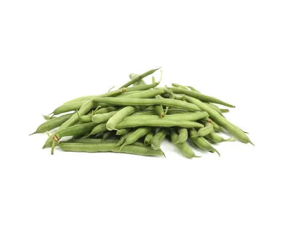
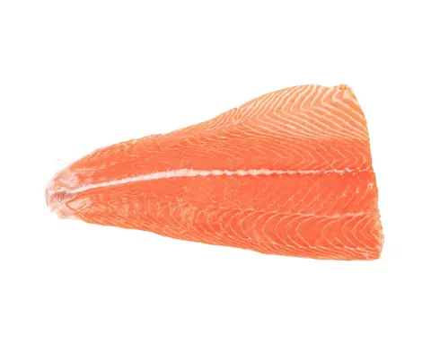

In short
- Meal prep is self-care: it keeps your energy steady while you heal.
- Try micro-prep: prep ingredients, cook once and eat twice.
- Choose one-handed foods, use shortcuts, and say yes to help.
Meal prep as self-care
The early weeks and months with a new baby are a joyful, overwhelming blur. Between night feeds, diaper changes and learning your baby’s cues, a proper sit-down meal can feel like a luxury.
Meal prep isn’t a strict diet chore. Think of it as self-care, and your secret weapon for getting through the day. Here’s why it helps, and how to make it work without the pressure.
Why it helps
- Steady energy for recovery: your body needs enough food, protein and fluids while you heal. Having food ready helps you avoid skipped meals and energy crashes.
- Fuel for breastfeeding: if you’re breastfeeding, the CDC says you need about 330 to 400 extra calories a day. Easy, ready-to-eat food helps you keep up with your appetite.
- One less decision: sleep loss makes every choice harder. Knowing what’s for lunch frees up mental energy.
- Less spending and less waste: a stocked fridge means fewer last-minute takeout orders and less produce going bad.
Skip the pressure: try micro-prep
Meal prep doesn’t have to mean six hours on a Sunday filling 20 identical containers. With a newborn, small steps work better.
- Prep ingredients, not full meals: roast a sheet pan of sweet potatoes and vegetables, cook a pot of quinoa, and shred a store-bought rotisserie chicken. Store them separately, then mix and match into bowls, wraps or salads in a couple of minutes.
- Cook once, eat twice: when you make soup, a casserole or chili, double it and freeze half in single portions.
- Use small windows: chop vegetables while the kettle boils, or roll a batch of energy bites while your baby naps.
Foods worth making ahead
Choose foods that keep well, need little reheating and are full of nutrients.
- Overnight oats and energy bites: an easy, filling base. Make a few jars of overnight oats, or roll oat and peanut butter bites for a one-handed snack.
- Sheet-pan dinners: chicken, salmon, sweet potatoes and green beans can roast together on parchment for easy cleanup.
- Jar and grain salads: layer the dressing at the bottom, then sturdy ingredients like chickpeas, cucumber, quinoa and chicken, with greens on top. They keep crisp for up to 4 days.
- Soups and stews: broth soups, lentil chili and sweet potato coconut stew freeze well and are easy to reheat.
Smart strategies
- Go one-handed: babies often want to be held at mealtimes. Pick foods you can eat with one hand or a single spoon or fork, like wraps, bites, bowls and smoothies.
- Use shortcuts: frozen steam-in-bag vegetables, microwave rice pouches, canned beans and prewashed greens all save time.
- Accept help: when someone asks “How can I help?”, ask for a homemade soup or a batch of muffins.
- Keep it food-safe: refrigerate cooked food and rotisserie chicken within 2 hours, eat leftovers within 3 to 4 days or freeze them, and reheat until steaming hot (165°F).
One batch at a time
Saying yes to meal prep isn’t about a picture-perfect fridge. It’s about feeding yourself well, so you have the energy to care for your baby. Take it one batch, one jar and one meal at a time.
Foods in this article
 Sweet potato
Sweet potato
Green beans Chicken
Chicken
Salmon
How to serve each one at every age is in the app's food guide.
Caring for you
Articles and self-care tips about postpartum recovery and well-being are for general information and support. They aren't therapy or medical treatment. If you have signs of postpartum depression or anxiety, or physical problems after birth, reach out to your doctor, midwife or a licensed mental health professional right away. In a crisis, call or text 988, or call 911.
Sources
- Maternal Diet and Breastfeeding · CDC
- Leftovers and Food Safety · USDA Food Safety and Inspection Service
All articles, recipes, guides, tips and chat answers in Mama & Baby Bites are for general information and education only. They are not medical, pediatric or nutritional advice, and they don't replace care from a qualified professional. In an emergency, call 911.